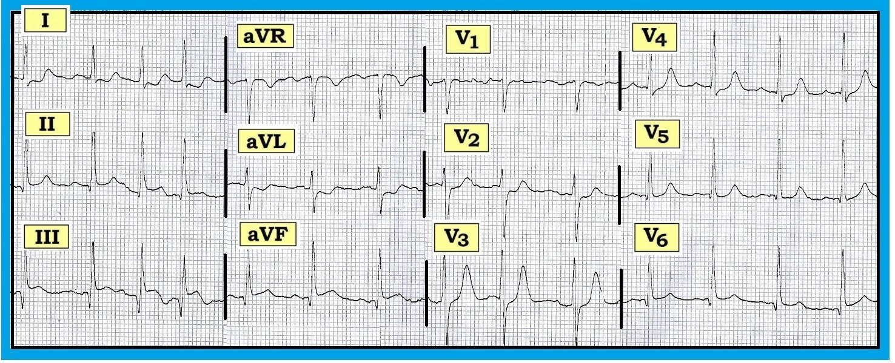
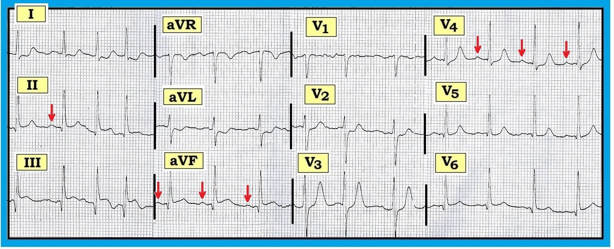
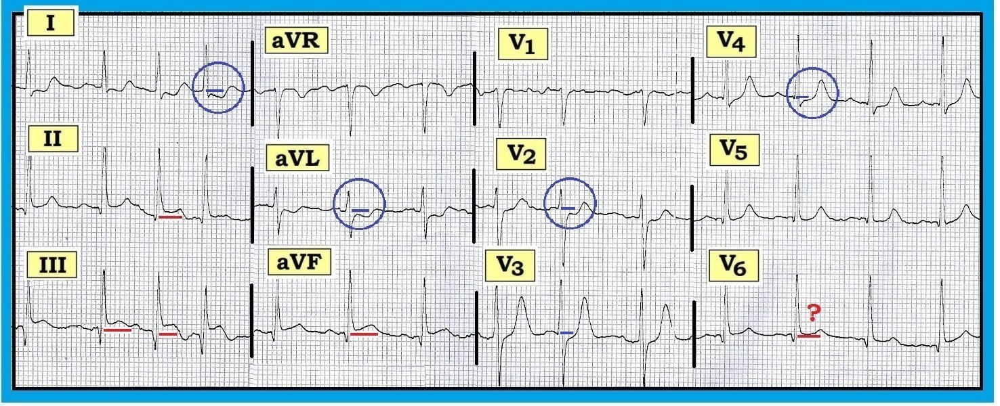
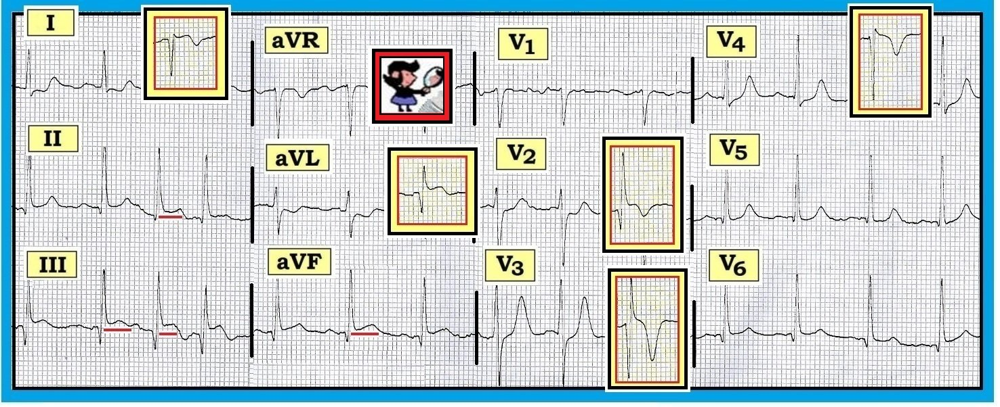

Ôn tập đọc điện tâm đồ – Số 43 (AFib - PAC - MI cấp - STEMI - ST dạng "mặt cười" - thay đổi soi gương)
Điện tâm đồ 12 chuyển đạo trong Hình được ghi ở một phụ nữ lớn tuổi đang vô cùng lo âu về hoàn cảnh gia đình. Bà cảm thấy có một số “cảm giác ở tim”.
- Bà có đang rung nhĩ không?
- Có điều gì khác đang xảy ra không?


-------------------------------------------------------
DIỄN GIẢI: Thoạt nhìn – bệnh nhân có vẻ đang rung nhĩ. Nhịp trong Hình 1 không đều, và không thấy sóng P dương bình thường đi trước mỗi phức bộ QRS ở chuyển đạo II. Dù vậy – có nhiễu, và có một phần trôi đường nền ở chuyển đạo II.
- Lý tưởng nhất là có một dải nhịp chuyển đạo II ghi đồng thời để xác định nhịp …
- Ngay cả khi không có dải nhịp chuyển đạo II – Chúng tôi cho rằng đây không phải AFib (Atrial Fibrillation – rung nhĩ). Hình 2 giải thích lý do.
-------------------------------------------------------


-------------------------------------------------------
BÀN LUẬN VỀ HÌNH 2: Việc thêm các mũi tên đỏ vào điện tâm đồ ở Hình 1 gợi ý mạnh rằng mặc dù hình ảnh không đều ở chuyển đạo II – nhịp nền là nhịp xoang:
- Lưu ý rằng nhịp nhìn chung trở nên khá đều sau vài nhát đầu (chỗ không đều chủ yếu là các nhát #2,3,4 ở chuyển đạo II …).
- Quan sát kỹ trước phức bộ QRS ở chuyển đạo aVF và ở chuyển đạo V4 quả thật gợi ý có sóng P dương với khoảng PR cố định (mũi tên đỏ ở các chuyển đạo này).
Như vậy, dù không thể biết chắc nếu không có một dải nhịp chuyển đạo II dài hơn – Chúng tôi nghi ngờ mạnh nhịp ở đây là cơ chế xoang nền kèm PAC thường xuyên (Premature Atrial Contractions – ngoại tâm thu nhĩ).
- PAC thường xuyên rõ ràng là một nguyên nhân gây “cảm giác ở tim”.
- Có tới một nửa số bệnh nhân AFib mắc thể từng cơn (= PAF = Paroxysmal Atrial Fibrillation – rung nhĩ kịch phát). Bệnh nhân PAF thường biểu hiện một chuỗi PAC trước khi khởi phát AFib kéo dài (có lẽ khi một trong các PAC rơi vào thời kỳ dễ tổn thương của nhĩ và “châm ngòi” cho cơn AFib) – vì vậy tất nhiên có khả năng người phụ nữ lớn tuổi trong case này đang có những cơn AFib từng đợt …
-------------------------------------------------------
Có Điều Gì Khác Đang Xảy Ra Không?
Còn nhiều điều hơn cả nhịp – có những mối lo ngại khác về điện tâm đồ ở Hình 1, ghi ở phụ nữ lớn tuổi này, người đang lo âu và có “cảm giác ở tim”. Tiếp tục đọc một cách hệ thống, chúng tôi ghi nhận:
- Các khoảng PR, QRS và QT bình thường.
- Trục QRS trung bình bình thường (khoảng +60 độ).
- Không có lớn buồng tim.
- Đánh giá Thay đổi Q-R-S-T cho thấy rõ ràng có bất thường (Hình 3):
-------------------------------------------------------


-------------------------------------------------------
Đánh giá Thay đổi Q-R-S-T:
Đặc biệt khi đánh giá những bản ghi phức tạp như bản ghi này – tốt nhất là hoàn tất một cách hệ thống bước Phân tích Mô tả (ghi nhận tất cả các dấu hiệu thấy được) – trước khi cố đưa ra Nhận định Lâm sàng. Chỉ như vậy bạn mới tránh bỏ sót những dấu hiệu có thể quan trọng. Chúng tôi ghi nhận như sau:
- Sóng Q: – Có sóng Q ở các chuyển đạo dưới (II,III,aVF) và trước tim bên (V5,V6). Sóng Q ở chuyển đạo III và aVF tương đối sâu và rộng. Sóng Q ở chuyển đạo V6 rộng hơn mức dự kiến đối với một sóng q vách bình thường.
- Tăng tiến sóng R: Vùng chuyển tiếp nằm ở vị trí bình thường (giữa chuyển đạo V2-đến-V3) – tuy nhiên, biên độ sóng R tăng khá đột ngột ở chuyển đạo V3.
- Thay đổi ST và sóng T: Dấu hiệu đáng lo nhất trên bản ghi này là đoạn ST chênh lên ở mỗi chuyển đạo dưới. Dù mức ST chênh lên thay đổi theo từng nhát ở chuyển đạo II và III ghi đồng thời (do trôi đường nền) – dấu hiệu ST chênh lên dạng vòm (coving) trên đường nền đoạn PR là không thể nhầm lẫn (các đường ngang màu đỏ ở các chuyển đạo dưới trong Hình 3).
- Cũng có gợi ý ST chênh lên ở chuyển đạo V6. Dấu hiệu này kín đáo (đường đỏ ở V6) – và được gợi ý nhiều hơn bởi hình dạng đoạn ST ở chuyển đạo V6 (trông như chênh lên) – chứ không phải bởi mức ST chênh lên (nhiều nhất cũng chỉ rất ít). Trôi đường nền ở chuyển đạo V6 khiến việc đánh giá ST-sóng T ở chuyển đạo này đặc biệt khó.
- Bằng chứng ủng hộ rằng các dấu hiệu trên thực sự là cấp tính đến từ sự hiện diện của đoạn ST chênh xuống soi gương (reciprocal) ở nhiều chuyển đạo (I,aVL; V2,V3,V4).
- Một thay đổi soi gương kín đáo khác là sóng T nhọn không tương xứng ở chuyển đạo V3 và V4.
-------------------------------------------------------
NHẬN ĐỊNH LÂM SÀNG:
Mỗi dấu hiệu chúng tôi ghi nhận ở trên trong bước Phân tích Mô tả Thay đổi Q-R-S-T đều góp phần vào Nhận định Lâm sàng của chúng tôi trong case này:
- Chúng tôi nghi ngờ mạnh MI dưới-sau-bên cấp đang tiến triển. Dù không thể “xác định thời điểm” nhồi máu trong case này (không có tiền sử đau ngực mới khởi phát) – rõ ràng có ST chênh lên gợi ý lợi ích có thể có từ tái tưới máu cấp. Nên cân nhắc đây là một can thiệp khả dĩ trong bối cảnh case này (có thể được hỗ trợ bởi các bản ghi lặp lại, troponin, so sánh với các bản ghi trước và diễn tiến lâm sàng của bệnh nhân).
- ST chênh lên ở cả 3 chuyển đạo dưới (II,III,aVF) gợi ý MI thành dưới cấp.
- Việc sóng Q ở các chuyển đạo dưới sâu và rộng – và – không có tiền sử rõ ràng về đau ngực mới khởi phát khiến chúng tôi đặt câu hỏi những thay đổi này “cấp đến mức nào” …
- Dù vậy – sự hiện diện của ST chênh xuống soi gương rõ ràng ở nhiều vùng chuyển đạo (các vòng tròn xanh ở chuyển đạo I,aVL,V2,V4 trong Hình 3) ủng hộ khả năng STEMI (ST-Elevation Myocardial Infarction – nhồi máu cơ tim ST chênh lên) đang tiến triển cấp.
- ST chênh xuống ở chuyển đạo V2,V3 gợi ý tổn thương thành sau cấp. Ủng hộ dấu hiệu này là biên độ sóng R tăng đột ngột từ V2-đến-V3 và sóng T cao không tương xứng ở V3,V4. Vì không chuyển đạo nào trong 12 chuyển đạo chuẩn nhìn trực tiếp vào thành sau – chúng tôi thường suy ra có tổn thương thành sau khi bối cảnh lâm sàng “phù hợp” (tức là, kèm MI thành dưới – vì cả thành dưới và thành sau của thất trái thường được động mạch vành phải cấp máu) – và – khi “Nghiệm pháp Soi gương” dương tính (Xem Hình 4 bên dưới).
- Biết rằng tuần hoàn “ưu thế trái” có thể gặp ở một số ít bệnh nhân có động mạch vành phải tương đối nhỏ – làm tăng mức nghi ngờ của chúng tôi về tổn thương bên trước tim đi kèm ở Hình 3. Nghĩa là, ở khoảng 10% bệnh nhân – động mạch mũ trái chiếm ưu thế – vòng quanh thành bên rồi tiếp tục đi xuống, cấp máu cho thành sau và thành dưới của thất trái. Do đó, trong bối cảnh sóng Q sâu-và-rộng-hơn-dự-kiến ở chuyển đạo V6 kèm gợi ý ST chênh lên ở chuyển đạo này – chúng tôi nghi ngờ MI dưới-sau-bên cấp ở Hình 1.
-------------------------------------------------------


-------------------------------------------------------
Hình 4: “Nghiệm pháp SOI GƯƠNG” – cho MI thành sau/Thay đổi soi gương:
Khái niệm thay đổi soi gương dựa trên giả định đơn giản hoá rằng thất trái hoạt động như một cấu trúc hình trụ. Khi có tổn thương cấp (do tắc động mạch vành cấp) – đoạn ST chênh lên ở các chuyển đạo nằm trực tiếp phía trên vùng đang nhồi máu. Ở những vùng đối diện của tim – thay vì ST chênh lên, lại có ST chênh xuống “soi gương”. Với cấu trúc cơ bản hình trụ của thất trái – thay đổi soi gương có thể thấy ở bất kỳ vùng chuyển đạo nào không nhồi máu, vì theo một nghĩa nào đó mọi thành đều “đối diện” với nhau. Do đó, ST chênh xuống ở các chuyển đạo chi bên (I,aVL) và chuyển đạo trước (V2,V3,V4) trong Hình 4 có thể phản ánh “thay đổi soi gương”.
- Thành sau của thất trái “nhìn thấy” hoạt động điện ngược chiều dạng “ảnh phản chiếu” so với thành trước. Như các hình chèn tô màu ở chuyển đạo V2,V3 trong Hình 4 cho thấy – thay vì phức bộ RS kèm ST chênh xuống – ảnh phản chiếu ở V2,V3 cho thấy sóng Q, ST chênh lên và sóng T đảo ngược sâu, đối xứng. “Ảnh phản chiếu” của biên độ sóng R tăng đột ngột đến V3 là một sóng Q sâu dần – và “ảnh phản chiếu” của sóng T cao không tương xứng ở V3,V4 là sóng T đảo ngược sâu, đối xứng. Trong bối cảnh MI thành dưới cấp đi kèm – những thay đổi này gần như chẩn đoán MI thành sau cấp kèm theo.
- Hiểu rằng ST chênh xuống “soi gương” chỉ đơn giản là ảnh phản chiếu của ST chênh lên ở một vùng khác của tim sẽ giúp nhận biết. Hãy lưu ý hình ảnh phản chiếu của phức bộ QRST ở các hình chèn tô màu ở chuyển đạo I và aVL trong Hình 4. Hầu như không còn nghi ngờ rằng ST chênh xuống ở các chuyển đạo bên cao này là thay đổi soi gương xảy ra cùng với MI thành dưới cấp của bệnh nhân.
------------------------------------------------------------------------------
ĐIỀU CỐT LÕI: Nhiều thay đổi trong case này kín đáo và thuộc về những khái niệm nâng cao. Ít nhất – thông điệp “cần nhớ” từ case thú vị này là:
- Nguyên nhân gây “cảm giác ở tim” ở người phụ nữ lớn tuổi lo âu nhưng không đau ngực này không phải AFib. Thay vào đó – nhịp nền của bà là nhịp xoang kèm PAC.
- Một phần “cảm giác ở tim” của bệnh nhân có lẽ liên quan tới MI thành dưới cấp. Dù không có tiền sử rõ ràng (không có thời điểm khởi phát đau ngực xác định) nên không thể xác định tuổi của MI – sự hiện diện của ST chênh lên ở chuyển đạo dưới kèm thay đổi soi gương ở nhiều vùng chuyển đạo khác gợi ý mạnh rằng ít nhất đây là khởi phát tương đối gần đây (do đó có thể được lợi từ tái tưới máu cấp). Điều này cần được đánh giá thêm.
- Liệu các sóng Q sâu và rộng đã có sẵn ở chuyển đạo III và aVF phản ánh MI thành dưới cũ ở bệnh nhân lớn tuổi này (chồng thêm tổn thương thành dưới mới) – hay – tổn thương đang tiếp diễn do biến cố cấp vẫn đang tiến triển – hay – một sự kết hợp các khả năng này – là điều không thể biết chắc từ “ảnh chụp nhanh” mà chúng ta có ở Hình 1. Cần thời gian, các bản ghi và troponin lặp lại, kết quả thăm khám và diễn tiến lâm sàng để làm rõ.
- Ngoài thành dưới – các vùng khác của tim có thể bị ảnh hưởng (thành sau và có thể vùng trước tim bên). Việc ST chênh xuống ở V2,V3,V4 là thay đổi soi gương – nhồi máu thành sau đi kèm – hay một sự kết hợp của hai khả năng này thì kém quan trọng hơn nhiều so với việc nhận thức rằng dấu hiệu ST chênh lên đáng kể kèm ST chênh xuống ở nhiều chuyển đạo báo hiệu tổn thương một vùng cơ tim tương đối lớn hơn (cần được xử trí khẩn cấp hơn).
----------------------------------------------------
LƯU Ý: - Tệp PDF liên quan về chẩn đoán MI cấp trên điện tâm đồ:
- Liên kết tới Mục 10.0 trong ECG-2014-ePub của chúng tôi.
----------------------------------------------------